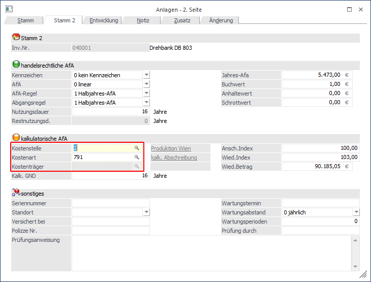

In der Anlagenbuchhaltung kann gewählt werden, ob Sie die kalk. Abschreibung (basierend auf kalkulatorischer Nutzungsdauer und Wiederbeschaffungswerten) oder den buchmäßigen Werten (steuerrechtliche Nutzungsdauer und Buchwerten) verwenden. Die Übergabe zu Wiederbeschaffungswerten erfolgt direkt in die KORE. Beim Arbeiten mit den buchmäßigen Werten werden die Kostenrechnungsinformationen mit dem FIBU-Stapel in die KORE übergeben. Es kann nur eine der beiden Varianten verwendet werden.
In der Anlagenbuchhaltung werden im Menüpunkt
1 Stammdaten
1 Anlagenstamm
1 Stamm 2
alle für die Kostenrechnung relevanten Daten hinterlegt:

Ø Kostenstelle
Kostenstellennummer, max. 20stellig, alphanumerisch
Ø Kostenart
Kostenartennummer, max. 20stellig, alphanumerisch
Ø Kostenträger
Kostenträgernummer, max. 20stellig, alphanumerisch, steht nur zur Verfügung, wenn die Kostenart, mit der die AfA durchgeführt wird, als "Einzelkostenart" definiert wurde. Damit ergibt sich die Möglichkeit, Abschreibungen, die klassischerweise "Gemeinkostenarten" sind (also NICHT direkt einem Kostenträger zugeordnet werden können) in Sonderfällen DIREKT gleich einem Kostenträger zuzurechnen (z. Beispiel: ein Transportunternehmen, das seine LKWs als Kostenträger führt).
Ø kalk. GND
Kalkulatorische Grundnutzungsdauer, kann von der steuerrechtlichen abweichen - und ist nur DANN relevant, wenn in den Anlagenparametern die Option "Kosten mit FIBU buchen" NICHT aktiviert wurde, d.h. die Variante der "Kalkulatorischen AfA" gewählt wurde. Die kalk. GND ist einer der Parameter für die Berechnung der kalk. AfA (Beispiel: Wiederbeschaffungswert = 10.000,-; die kalk. GND ist 5 Jahre à dann würden jedes Jahr in Summe 2.000,- abgeschrieben werden.
Hinweis 1
Die kalkulatorische AfA läuft so lange weiter, wie sich die Anlage im Unternehmen befindet bzw. die Parameter für die Berechnung der kalk. AfA eine Berechnung zulassen (Wiederbeschaffungswert/ kalkulatorische Nutzungsdauer). Die kalk. Nutzungsdauer gibt also nicht an, wie lange eine Anlage kalkulatorisch abzuschreiben ist, sondern stellt nur einen Parameter für die Berechnung der AfA dar. Somit läuft die kalkulatorische AfA auch weiter, wenn die kalkulatorische Nutzungsdauer theoretisch bereits abgelaufen wäre, solange die Anlage noch in Betrieb ist (was in der Kostenrechnung ja auch sinnvoll ist).
Ø Ansch. Index
Eingabe des Index zum Zeitpunkt der Anschaffung des Anlagegutes.
Ø Wied. Index
Index des Anlagegutes im aktuellen Wirtschaftsjahr. Aufgrund dieser beiden Indizes wird der Anschaffungswert auf den kalkulatorischen Wiederbeschaffungswert umgewertet.
Beispiel
Anschaffungs-Index = 100
Wiederbeschaffungs-Index = 150
Der Anschaffungswert von 12.500,-- (= Index 100) wird für die Berechnung der kalkulatorischen Afa mit 18.750,-- (= Index 150) angesetzt.
Nach Abrufen des kalkulatorischen Afa-Laufes im Menüpunkt Auswertungen/kalk. Abschreibung wird die vom Programm errechnete kalkulatorische Afa automatisch in das KORE-Journal gebucht. Das kalkulatorische Anlagenverzeichnis gibt jederzeit Auskunft, welche Abschreibungen zum Zeitpunkt der Auswertung gebucht würden.
Ø Kosten mit FIBU buchen
Durch Aktivieren bzw. Deaktivieren der Checkbox "Kosten mit FIBU buchen" in den Anlagenparametern kann bestimmt werden, ob die buchmäßigen Abschreibungswerte für die Kostenrechnung in den FIBU-Stapel mit übergeben werden oder nicht. Ist dieses Feld aktiv, dann ist keine kalkulatorische Abschreibung mit Wiederbeschaffungsindex möglich. Es werden die buchmäßigen Werte (Istwerte) der Abschreibung übergeben.
Hinweis 2
Ist in der Anlage in dieser AfA-Variante (Kosten mit FIBU-Buchen) keine Kostenart und/oder Kostenstelle hinterlegt, greift das Programm auf die Informationen zurück, die im Sachkonto hinterlegt worden sind (auch im Sachkonto kann die Kostenstelle und Kostenart vorbelegt werden).